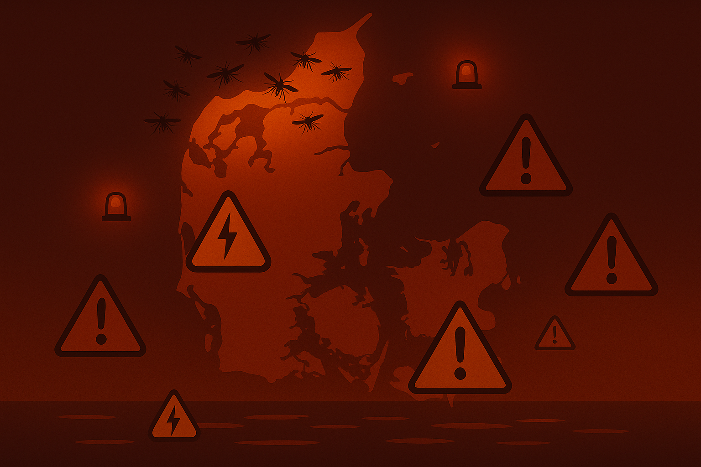
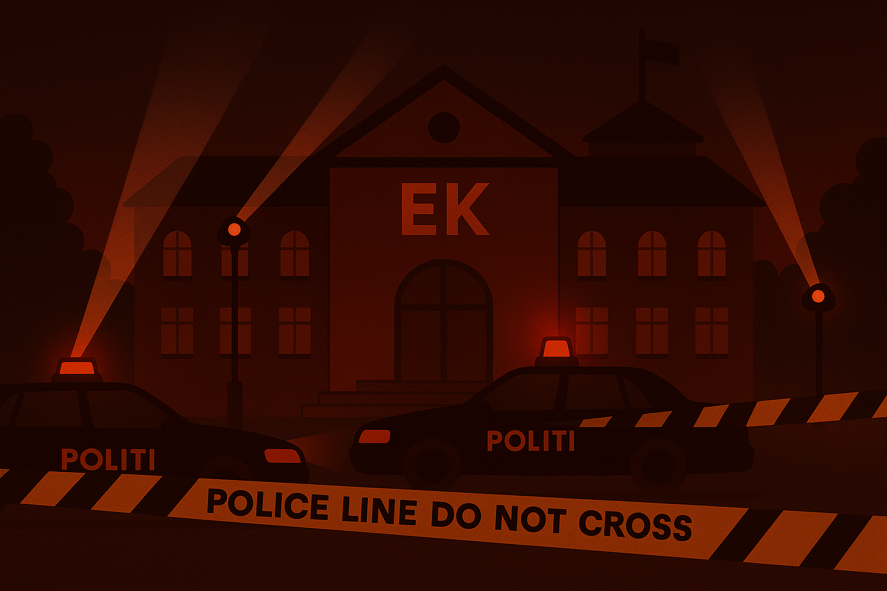

NÆRKONTAKT MED NVD-MYG
Flere borgere melder om stik, der efterlader elektriske sår og svimmelhed. Hold afstand til områder markeret med advarselsskilte.
Se mereHer er statens officielle guidelines.
Stukket af NVD-myg:
Brug for akut hjælp?
Ring: 112
Flere borgere melder om stik, der efterlader elektriske sår og svimmelhed. Hold afstand til områder markeret med advarselsskilte.
Se mere
Mistanke om robotter i menneskemængder skal straks anmeldes. Myggene har vist sig særligt aktive omkring disse enheder.
Se mereSundhedsmyndighederne advarer om NVD-25B — en muteret variant, der spredes hurtigere via elektrisk væske.
Se mereEuropæiske sundhedsmyndigheder advarer om en voldsom stigning i dødsfald i Sydeuropa. Flere af ligene er fundet med åbne, elektrificerede sår og spor af NVD-25 på væv og tøj. Myndighederne frygter, at smitten nu har krydset flere landegrænser.
Se mereMyndighederne har bekræftet smitte på tre store events i weekenden.
 Læs mere
Læs mere
Borgerne opfordres til at undgå søområder efter mørkets frembrud.
 Læs mereForskere mistænker, at en gruppe tidligere studerende fra EK i København(...)
 Læs mere